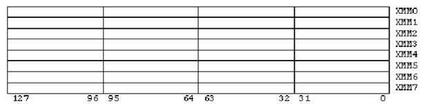

Особенности расширений SSE/SSE2
Расширение SSE
SSE (англ.
Streaming SIMD Extensions,
потоковое SIMD-расширение процессора)
— это набор SIMD
инструкций, разработанный Intel ,
и впервые представленный в процессорах
серии Pentium III.
Технология
SSE позволяет преодолеть
основную проблему MMX — при
использовании MMX невозможно одновременно использовать инструкции
сопроцессора, так как
его регистры используются и для
MMX и для работы FPU.
Расширение
позволяет выполнять векторные
(пакетные) и скалярные
инструкции. Векторные
инструкции реализуют операции сразу
над четырьмя комплектами
операндов. Скалярные инструкции работают
только с одним комплектом операндов – младшим 32-битным словом.
SSE
включает в архитектуру
процессора восемь 128-битных
регистров xmm0…xmm7, каждый из
которых трактуется как 4
последовательных значения с плавающей
точкой одинарной точности.
Расширение позволяет выполнять
векторные (пакетные) и
скалярные инструкции. Векторные
инструкции реализуют операции
сразу над четырьмя
комплектами операндов. Скалярные инструкции работают только
с одним комплектом операндов – младшим 32-битным словом.
Реализация блоков
SIMD осуществляется
распараллеливанием вычислительного
процесса между данными. То есть когда через один блок проходит поочередно
множество потоков данных.
Расширение
SSE2
SSE2 (англ. Streaming SIMD Extensions 2, потоковое SIMD-расширение
процессора) – это SIMD
(англ. Single Instruction,
Multiple Data, Одна
инструкция – множество
данных) набор инструкций,
разработанный Intel , и впервые представленный в процессорах серии Pentium 4.
SSE2 использует те же восемь 128-битных регистров
xmm0…xmm7 что и расширение SSE, каждый
из которых трактуется
как 2 последовательных значения
с плавающей точкой
двойной точности. SSE2 включает в себя набор инструкций, которые
производят операции со скалярными и
упакованными типами данных.
Также SSE2 содержит
инструкции для потоковой
обработки целочисленных
данных в тех же 128-битных
xmm регистрах, что
делает это расширение
более предпочтительным для целочисленных
вычислений, нежели использование
набора инструкций MMX.
Программная модель SSE/SSE2
Регистры
SSE/SSE2
Все три
расширения работают с
одним набором 128-битных
регистров, обозначаемых XMM0…XMM7,
как показано на рисунке 3.

Рисунок 3 – Регистры SSE/SSE2
Типы данных SSE/SSE2
Новые расширения
микропроцессора дополняют уже
имеющиеся типы данных
новыми упакованными типами:
·
4 упакованных
вещественных числа одинарной точности;
·
2 упакованных
вещественных числа двойной точности;
·
16 упакованных
целых байтов;
·
8 упакованных
целых слов;
·
4 упакованных
целых двойных слова;
·
2 упакованных
целых учетверенных слова.
Система
команд SSE/SSE2
Команды SSE
Команды SSE
делятся на 4 категории:
·
SIMD-команды для
данных одинарной точности с плавающей запятой (SPFP-команды);
·
дополнительные
SIMD-команды для целочисленных данных;
·
команды
управления кэшированием;
·
команды
сохранения и восстановления компонент состояния процессора.
Одна SIMD-команда
с плавающей запятой может
обрабатывать одновременно четыре 32-разрядных
числа одинарной точности
с плавающей запятой
(называемых SPFP-элементами
данных).
Каждое 32-разрядное число с плавающей запятой имеет 1
знаковый бит, 8 битов порядка и 23
бита мантиссы, что
соответствует стандарту IEEE-754
на формат представления
чисел одинарной точности с плавающей запятой.
SIMD-команды поддерживают два типа операций над
упакованными данными с плавающей запятой - параллельные и скалярные.
Параллельные
операции, как правило,
действуют одновременно на
все четыре 32-разрядных
элемента данных в
каждом из 128-разрядных
операндов. В именах
команд, выполняющих параллельные операции, присутствует суффикс PS.
Скалярные операции действуют на младшие (занимающие
разряды 0-31) элементы данных двух
операндов. Остальные три
элемента данных в
выходном операнде не
изменяются (исключение
составляет команда скалярного
копирования MOVSS). В имени
команд, выполняющих скалярные операции, присутствует суффикс SS.
SSE-команды
имеют следующий синтаксис:
instruction
[dest, src]
Здесь instruction –
имя команды, dest обозначает выходной операнд, src – входной операнд.
Доступны
следующие SSE-команды
(обозначения: xmm – XMM-регистр; mm – MMX-регистр; m –
память; imm – 8-битный непосредственный операнд; ir32 – целочисленный регистр):
·
addps xmm, xmm/m.. Команда попарно
складывает упакованные элементы
данных и записывает суммы в
соответствующие элементы XMM-регистра.
·
subps xmm, xmm/m. Команда вычитает элементы входного операнда из
элементов первого регистра и записывает полученные разности в соответствующие
элементы первого регистра.
·
mulps xmm, xmm/m. Команда попарно перемножает упакованные элементы.
Произведения записываются в соответствующие элементы XMM-регистра.
·
divps xmm, xmm/m. Команда делит
элементы первого операнда
на соответствующие элементы входного
операнда. Результаты деления
записываются в XMM-регистр на
место делимых.
·
addss xmm, xmm/m. Команда складывает
младшие элементы данных
и записывает результат в
младший элемент XMM-регистра. Остальные
элементы выходного операнда
не меняются.
·
subss xmm, xmm/m. Команда вычитает
младший элемент входного
операнда из соответствующего элемента
выходного операнда и
записывает разность в
младший элемент выходного
операнда. Остальные элементы выходного операнда не меняются.
·
mulss xmm, xmm/m. Команда перемножает
младшие элементы данных
и записывает результат в
младший элемент XMM-регистра. Остальные
элементы выходного операнда
не меняются.
·
divss xmm, xmm/m. Команда делит
младший элемент выходного
операнда на соответствующий элемент
входного операнда и
записывает результат в
младший элемент выходного
операнда. Остальные элементы выходного операнда не меняются.
·
sqrtps xmm, xmm/m. Команда вычисляет квадратный корень для каждого из
четырех чисел во входном операнде и записывает результаты в выходной
операнд.
·
sqrtss xmm, xmm/m .
Команда вычисляет квадратный
корень из младшего
элемента входного операнда и
записывает результат в младший элемент
в выходной операнд. Остальные
элементы выходного операнда не меняются.
·
rcpps xmm, xmm/m. Команда определяет приближенное обратное значение для
каждого из четырех чисел входного операнда и записывает результаты в XMM-регистр.
·
rsqrtps xmm, xmm/m. Команда вычисляет
приближенное обратное значение
для квадратного корня из
каждого из четырех
чисел входного операнда
и записывает результаты
в XMM-регистр.
·
rcpss xmm, xmm/m. Команда определяет
приближенное обратное значение для
числа, находящегося в младшем элементе входного операнда и записывает
результат в младший элемент выходного операнда. Остальные элементы выходного
операнда не меняются.
·
rsqrtss xmm, xmm/m. Команда вычисляет
приближенное обратное значение
для квадратного корня из
числа , находящегося в младшем элементе
входного операнда и записываетрезультат
в младший элемент выходного операнда. Остальные элементы
выходного операнда не меняются.
·
maxps xmm,
xmm/m. Команда попарно сравнивает
элементы данных и записывает большее значение из каждой пары в соответствующий
элемент выходного операнда.
·
minps xmm,
xmm/m. Команда попарно сравнивает
элементы данных и записывает меньшие значения из каждой пары в соответствующие
элементы выходного операнда.
·
maxss xmm,
xmm/m. Команда
сравнивает младшие элементы
данных и записывает большее из
значений в младший
элемент выходного операнда. Остальные элементы
выходного операнда не меняются.
·
minss xmm,
xmm/m. команда сравнивает младшие
элементы данных и записывает меньшее из значений в младший элемент выходного
операнда. Остальные элементы выходного операнда не меняются.
·
shufps xmm,
xmm/m, imm. Команда с непосредственным операндом выбирает из первого операнда два элемента с
2-битными номерами из непосредственного операнда (непосредственный операнд делится
справа налево на
4 2-битовых числа)
и записывает их
в младшие элементы выходного операнда. Из второго операнда выбираются два элемента
со следующими 2-битными номерами
и записываются в старшие элементы выходного операнда. Перестановка всех
элементов происходит одновременно.
·
unpckhps xmm,
xmm/m. Команда
копирует третьи элементы
входного и выходного операндов в соседние младшие
элементы выходного операнда, а четвертые элементы входного и выходного операндов
- соответственно, в
старшие элементы выходного
операнда. Распаковка элементов выполняется
одновременно.
·
unpcklps xmm,
xmm/m. Команда
копирует первые элементы
входного и выходного операндов в
соседние младшие элементы
выходного операнда, а
вторые элементы входного
и выходного операндов - соответственно, в старшие элементы этого
операнда. Распаковка элементов выполняется одновременно.
·
movaps
xmm/m, xmm/m. Команда копирует
четыре FP-элемента одним
из следующих способов:
-
из памяти в
XMM-регистр;
-
из XMM-регистра в
память;
-
из одного
XMM-регистра в другой.
Линейный
адрес соответствует адресу
младшего байта группы
данных в памяти. Обращение в
память должно быть
по адресу, кратному
16 байтам; в
противном случае генерируется
исключение.
·
movups xmm/m,
xmm/m. Команда копирует четыре
FP-элемента. Линейный адрес соответствует
адресу младшего байта группы
данных в памяти. Команда применяется для
обращения к невыровненным данным в памяти.
·
movhps
xmm/m, xmm/m. Команда копирует
два FP-элемента одним
из следующих способов:
-
из памяти в два
старшие элемента XMM-регистра
-
из двух старших
элементов XMM-регистра в память
При копировании данных из памяти в XMM-регистр, два
младших элемента этого регистра не изменяются. Команда работает с адресом
младшего байта группы данных в памяти.
·
movlps
xmm/m, xmm/m. Команда копирует
два FP-элемента одним
из следующих способов:
-
из памяти в два
младшие элемента XMM-регистра
-
из двух младших
элементов XMM-регистра в память
При копировании данных из памяти в XMM-регистр, два
старших элемента этого регистра не изменяются. Линейный адрес соответствует
адресу младшего байта группы данных в памяти.
·
movss
xmm/m, xmm/m. Команда копирует
один 32-рарядный FP-элемент одним
из следующих способов:
-
из памяти в
младший элемент XMM-регистра
-
из младшего
элемента XMM-регистра в память
-
из младшего
элемента одного XMM-регистра в
младший элемент другого
XMM-регистра
При копировании 32 битов данных из памяти в XMM-регистр, все 96 оставшихся старших битов этого
регистра обнуляются. Команда работает с адресом младшего байта группы данных в
памяти.
·
movlhps xmm, xmm. Команда
копирует 64 младших
разряда входного регистра
в 64 старших разряда
выходного регистра, не
меняя содержимое 64
младших разрядов выходного регистра.
·
movhlps xmm, xmm. Команда
копирует 64 старших
разряда входного регистра
в 64 младших разряда
выходного регистра, не
меняя содержимое 64
старших разрядов выходного регистра.
·
movmskps ir32, xmm. Команда копирует
содержимое старших (знаковых)
разрядов каждого из четырех FP-элементов,
находящихся во входном XMM-регистре, в
младшие разряды выходного целочисленного регистра, и формирует таким образом 4-битовую маску. Старшие 28
разрядов целочисленного регистра обнуляются.
·
cmpeqps xmm, xmm/m; cmpltps xmm, xmm/m; cmpleps xmm, xmm/m; cmpunordps xmm, xmm/m; cmpneqps xmm, xmm/m; cmpnltps xmm, xmm/m; cmpnleps xmm, xmm/m; cmpordps xmm, xmm/m. Команды попарно
сравнивают числа в соответствующих элементах
операндов, проверяя
выполнение условий равно,
меньше, меньше или
равно, несравнимы, не
равно, не меньше, не
{ меньше или
равно}, сравнимы соответственно. Элементы
выходного операнда заполняются
масками из единиц или нулей в зависимости от результата.
·
cmpeqss xmm, xmm/m; cmpltss xmm, xmm/m; cmpless xmm, xmm/m; cmpunordss xmm, xmm/m; cmpneqss xmm, xmm/m; cmpnltss xmm, xmm/m; cmpnless xmm, xmm/m; cmpordss xmm, xmm/m. Команды сравнивают числа в младших элементах
операндов, проверяя выполнение условий
равно, меньше, меньше
или равно, несравнимы, не равно,
не меньше, не
(меньше или равно), сравнимы
соответственно. Младший элемент
выходного операнда заполняется маской из
единиц или нулей в зависимости от результата. Содержимое трех
старших элементов выходного операнда сохраняется.
·
andps xmm, xmm/m. Команда вычисляет
поразрядное логическое И
своих 128-битных входного и
выходного операндов. Каждый
бит результата полагается
равным 1, если
оба соответствующих бита операндов
равны 1, и
равным 0 в
противном случае. Результат записывается в выходной операнд.
·
andnps xmm, xmm/m. Команда сначала
инвертирует все разряды
выходного операнда
(логическое НЕ), а
затем вычисляет поразрядное
логическое И входного
и инвертированного выходного
операндов. Каждый бит результата полагается равным 1, если для входного операнда соответствующий
бит равен 1, а для выходного
- равен 0. В противном случае
присваивается 0. Результат записывается в выходной операнд.
·
orps xmm, xmm/m. Команда вычисляет
поразрядное логическое ИЛИ
своих 128-битных входного и
выходного операндов. Каждый
бит результата полагается
равным 0, если
оба соответствующих бита операндов
равны 0, и
равным 1 в
противном случае. Результат записывается в выходной операнд.
·
xorps xmm, xmm/m.
Команда вычисляет поразрядное логическое исключающее ИЛИ своих 128-битных
входного и выходного операндов. Каждый бит результата полагается равным 1, если
соответствующие биты операндов содержат
различные значения. В случае одинаковых значений присваивается 0. Результат
записывается в выходной операнд.
·
comiss xmm, xmm/m. Команда выполняет сравнение двух младших элементов
операндов и устанавливает для них
одно из соотношений:
"меньше",
"равны",
"больше",
"несравнимы". По
результатам сравнения устанавливаются следующие значения флагов состояния ZF, PF и CF.
Команды SSE2
При описании
операндов инструкций использованы следующие обозначения:
·
mmx – любой из
восьми 64-х разрядных регистров MMX.
·
xmm – любой из
восьми 128-ми разрядных регистров.
·
r32 – любой 32-х
разрядный регистр общего назначения: EAX, EBX и так далее.
·
m128, m64, m32, m8 – элемент памяти соответствующего размера в
битах.
·
imm8 –
непосредственный способ адресации,
число имеющее размер
байта, например, константа
сдвига.
Если в качестве
операнда указано только имя регистра или только элемент памяти, то это
означает, что операнд может находиться
только в регистре или только
в ОЗУ. Если же указано сочетание обозначений
имени регистра и
элемента памяти, разделенное
наклонной скобкой, например, xmm/m128 то операнд
может находиться либо в регистре, либо в ОЗУ.
Групповые арифметические операции,
нахождение максимума и
минимума, извлечение
квадратного корня. Операнды (dest и src) содержат по
два вещественных числа двойной точности (64-bit), соответственно в dest получаются два 64-bit результата.
·
addpd xmm, xmm/m128. – сложение двух пар вещественных чисел удвоенной
точности
·
subpd xmm, xmm/m128. – вычитание двух пар вещественных чисел удвоенной
точности
·
mulpd xmm, xmm/m128. – умножение двух пар вещественных чисел удвоенной
точности
·
divpd xmm, xmm/m128. – деление двух пар вещественных чисел удвоенной
точности
·
sqrtpd xmm, xmm/m128. – извлечение
квадратного корня из
двух вещественных чисел источника с записью результата в
приемник
·
maxpd xmm, xmm/m128. – нахождение
в каждой паре
большего вещественного числа удвоенной точности
·
minpd xmm, xmm/m128. – нахождение
в каждой паре
меньшего вещественного числа удвоенной точности
Скалярные арифметические операции,
нахождение максимума и
минимума, извлечение
квадратного корня.
Вещественное число двойной
точности раположено в
младших половинах регистров xmm. Результат
получается в младшей
половине dest,
содержимое его старшей половины
не изменяется.
·
addsd xmm, xmm/m64. – сложение двух вещественных чисел удвоенной
точности
·
subsd xmm, xmm/m64. – вычитание двух вещественных чисел удвоенной
точности
·
mulsd xmm, xmm/m64. – умножение двух вещественных чисел удвоенной
точности
·
divsd xmm, xmm/m64. –деление двух вещественных чисел удвоенной точности
·
sqrtsd xmm, xmm/m64. – извлечение квадратного корня из вещественного числа
источника с записью результата в приемник
·
maxsd xmm, xmm/m64. – нахождение
большего из двух
вещественных чисел удвоенной точности
·
minsd xmm, xmm/m64. – нахождение
меньшего из двух
вещественных чисел удвоенной точности
Групповые операции
преобразования форматов чисел. Возможны два
типа преобразований:
·
вещественные числа
преобразуются в вещественные
с изменением точности представления – из двойной точности
в обычную или наоборот.
·
целые числа
преобразуются в вещественные
или вещественные числа
в целые. В последнем
случае возможно округление
или отсечение остатка.
Два целых числа
могут находиться в регистрах xmm или mmx.
·
cvtpd2ps xmm, xmm/m128. –
два вещественных числа преобразуются из формата с двойной точностью в формат с
обычной точностью. dest(64-127)=0
·
cvtps2pd xmm, xmm/m64. –
два вещественных числа преобразуются из формата с обычной точностью в формат с
двойной точностью. Если источником является xmm, то преобразуются два младших числа.
·
cvtps2dq xmm, xmm/m128. – 4
вещественных числа представленные с обычной точностью преобразуются в 4 целых
32-х разрядных числа.
·
cvttps2dq xmm, xmm/m128. – 4
вещественных числа представленные с обычной точностью преобразуются в 4 целых
32-х разрядных числа с отсечением остатка.
·
cvtdq2ps xmm, xmm/m128. – 4
целых 32-х разрядных
числа преобразуются в 4
вещественных числа, представленных с обычной точностью.
·
cvtpd2dq xmm, xmm/m128. –
два вещественных числа двойной точности преобразуются в два целых 32-х
разрядных числа. dest(64-127)=0
·
cvttpd2dq xmm, xmm/m128. –
два вещественных числа двойной точности преобразуются в два целых 32-х
разрядных числа с отсечением остатка. dest(64-127)=0
·
cvtdq2pd xmm, xmm/m64. – два
целых 32-х разрядных
числа преобразуются в два
вещественных числа, представленных с
двойной точностью. Если источником является
xmm, то
преобразуются два младших числа.
·
cvtpd2pi mmx, xmm/m128.
– два
вещественных числа двойной
точности преобразуются в два
целых 32-х разрядных числа и записываются в регистр mmx
·
cvttpd2pi mmx, xmm/m128. –
два вещественных числа двойной точности преобразуются в два целых 32-х
разрядных числа с отсечением остатка и записываются в регистр mmx
·
cvtpi2pd xmmx, mmx/m64. – два
целых 32-х разрядных
числа, находящихся в
регистре mmx, преобразуются в два
вещественных числа, представленных с двойной точностью.
Преобразования
формата одного числа. Возможны
два типа преобразований:
-
изменяется точность
представления вещественного числа
- двойная на
обычную или наоборот.
-
целое число
преобразуется в вещественное
или вещественное число
в целое. В последнем случае возможно округление или
отсечение остатка.
·
cvtsd2ss xmm, xmm/m64. – вещественное
число преобразуется из
формата с двойной точностью в формат с обычной
точностью. У dest не изменяется содержимое
разрядов 32-127.
·
cvtss2sd xmm, xmm/m32. – вещественное
число преобразуется из
формата с обычной точностью в формат с двойной
точностью. Содержимое старшей половины dest не изменяется.
·
cvtsd2si r32, xmm/m64. – вещественное число двойной точности преобразуются
в целое 32-х разрядное число.
·
cvttsd2si r32, xmm/m64. – вещественное число двойной точности преобразуется
в целое 32-х разрядное число.
·
cvtsi2sd xmm, r32/m32. –
целое 32-х разрядное число преобразуется в вещественное число, представленное с
двойной точностью. Содержимое старшей половины dest не изменяется.
Сравнения без
изменения состояния разрядов
EFLAGS. Для каждой
сравниваемой пары вещественных чисел
(dest[h],src[h] и dest[l],src[l]) при
положительном результате сравнения устанавливаются все
разряды dest[h] или dest[l] соответственно, в
противном случае они очищаются. Например, если содержимое регистра xmm сравнить с самим собой, то при проверке отношения
"равно" все 128 разрядов будет установлены, а при проверке отношения
"не равно" все 128 разрядов будут очищены.
·
cmppd xmm, xmm/m128,
imm8. –независимо друг от
друга сравниваются две
пары вещественных чисел. Результат
помещается в соответствующие половины
dest. Проверяемое условие
задает третий операнд (см. ниже).
·
cmpsd xmm, xmm/m128,
imm8. – сравниваются два
вещественных числа. Результат помещается в
младшую половину dest[l],
содержимое старшей половины
dest[h] не
изменяется. Проверяемое условие задает третий операнд.
При сравнении одной пары вещественных
чисел можно изменить состояние разрядов EFLAGS. Это делают две инструкции, различающиеся по способу
реагирования на случаи, когда один или
оба операнда не являются числами (NaN)
·
comisd xmm, xmm/m64 – сравниваются два вещественных числа. Если операнд QNaN или SNaN то
возникает исключительная ситуации.
·
ucomisd xmm, xmm/m64 – сравниваются два вещественных числа. Если операнд SNaN, то возникает исключительная ситуация.
Обмен 64-bit кодами
между оперативной памятью
(ОЗУ) и регистрами
xmm. Если
данные "выровнены", то
обращение к ОЗУ
занимает 1 такт,
в противном случае
2 такта. Выравнивание означает,
что адрес 64-bit кода должен быть кратен
8.
·
movsd xmm, xmm/m64. Пересылка из ОЗУ в младшие 64-разряда xmm
·
movsd xmm/m64, xmm.
Пересылка в ОЗУ младших 64-х разрядов xmm
Важно: при копировании содержимого одного регистра xmm в другой, содержимое старшей половины dest не изменяется.
·
movhpd xmm, m64.
Пересылка из ОЗУ в старшие 64-разряда xmm
·
movhpd m64, xmm. Пересылка в ОЗУ старших 64-х разрядов xmm
·
movlpd xmm, m64.
Пересылка из ОЗУ в младшие 64-разряда xmm
·
movlpd m64, xmm. Пересылка в ОЗУ младших 64-х разрядов xmm
Обмен 128-bit кодами
между оперативной памятью
(ОЗУ) и регистрами
xmm. Для
выравнивания 128-bit кодов их надо располагать по адресам кратным 16-ти. Обычно инструкции работают не
с ОЗУ, а с кэш. В данном случае предусмотрена специальная инструкция для записи
кодов в ОЗУ без кеширования, т.е. при ее выполнении содержимое кэш не
изменяется.
·
movntpd m128, xmm.
Пересылка 128-ми разрядного кода в ОЗУ без кеширования
Важно:
пересылаемый код должен
иметь адрес кратный
16-ти, в противном
случае возникает аварийная ситуация (нарушение защиты).
·
movapd xmm, xmm/m128. Пересылка 128-bit кода из ОЗУ в регистр xmm
·
movapd xmm/m128, xmm. Пересылка 128-bit кода из регистра xmm в ОЗУ
Важно:
пересылаемый код должен
иметь адрес кратный
16-ти, в противном
случае возникает аварийная ситуация (нарушение защиты).
·
movupd xmm, xmm/m128. Пересылка 128-bit кода из ОЗУ в регистр xmm
·
movupd xmm/m128, xmm. Пересылка 128-bit кода из регистра xmm в ОЗУ
Замечание: эта инструкция предназначена для применения
в тех случаях, когда данные не выровнены
или неизвестно выровнены они или нет.
Распаковка и
перегруппировка кодов являются
своеобразной разновидностью
пересылок.
·
unpckhpd xmm, xmm/m128. –
распаковка: в dest
копируется содержимое старших половин src и dest.
·
unpcklpd xmm, xmm/m128. – распаковка: в dest копируется
содержимое младших половин src и dest.
·
shufpd xmm, xmm/m128, imm8. –
перегруппировка: bit 0 imm8 указывает
какая половина dest копируется
в его младшие разряды, bit
1 imm8
указывает какая половина src копируется
в старшие разряды dest. В
обоих случаях 0
соответствует младшей половине,
а 1 -
старшей. Например, если dest и src находятся в
одном регистре, то imm8=1 вызовет перестановку чисел в dest.
Логические операции
вычисляют функции булевой
алгебры. Обычно они применяются для выделения или обединения
отдельных частей кода.
·
andpd xmm, xmm/m128. – логическая функция конъюнкция
("И").
Аналоги
ANDPS xmm, xmm/m128 и PAND xmm, xmm/m128
·
andnpd xmm, xmm/m128. – логическая функция без определенного названия.
Аналоги
ANDNPS xmm, xmm/m128 и PANDN xmm, xmm/m128.
·
orpd xmm, xmm/m128. – логическая функция дизюнкция
("ИЛИ").
Аналоги
ORPS xmm, xmm/m128 и POR xmm, xmm/m128.
·
xorpd xmm, xmm/m128. – логическая функция "исключенное
ИЛИ".
Аналоги
XORPS xmm, xmm/m128 и PXOR xmm, xmm/m128.
ПОРЯДОК ВЫПОЛНЕНИЯ РАБОТЫ
Для выполнения данной работы необходимо
выполнить следующее:
а) изучить программную модель ММХ;
б) изучить систему команд ММХ;
в) обработать массивы из 8 элементов по
следующему выражению (в зависимости от варианта):
1.
F[i]=(A[i]+B[i])*C[i]+D[i] , i=1...8;
2.
F[i]=(A[i]+B[i])*C[i]-D[i] , i=1...8;
3.
F[i]=A[i]-B[i]*C[i]+D[i] , i=1...8;
4.
F[i]=A[i]-B[i]*C[i]-D[i] , i=1...8;
5.
F[i]=A[i] *C[i]+B[i] *D[i] , i=1...8;
6.
F[i]=A[i] *B[i] +C[i] -D[i] , i=1...8.
7.
F[i]=A[i] -B[i] +C[i] *D[i] , i=1...8.
8.
F[i]=A[i] -B[i] +C[i] -D[i] , i=1...8.
9.
F[i]=A[i] *B[i] +C[i] -D[i] , i=1...8.
10.
F[i]=(A[i]+B[i])*(C[i]+D[i]) , i=1...8;
11.
F[i]=(A[i]+B[i])*(C[i]-D[i] ), i=1...8;
12.
F[i]=(A[i]-B[i])*(C[i]+D[i] ), i=1...8;
13.
F[i]=(A[i]-B[i])*(C[i]-D[i]) , i=1...8;
14.
F[i]=(A[i] *C[i])+(B[i] *D[i]) , i=1...8;
15.
F[i]=(A[i] *B[i]) +(C[i] -D[i]) , i=1...8.
16.
F[i]=(A[i] -B[i]) +(C[i] *D[i]) , i=1...8.
17.
F[i]=(A[i] -B[i]) +(C[i] -D[i] ), i=1...8.
18.
F[i]=(A[i] *B[i] )+(C[i] -D[i]) , i=1...8.
19.
F[i]=A[i]+(B[i])*C[i])+D[i] , i=1...8;
20.
F[i]=A[i]+(B[i])*C[i])-D[i] , i=1...8;
21.
F[i]=A[i]-(B[i]*C[i])+D[i] , i=1...8;
22.
F[i]=A[i]-(B[i]*C[i])-D[i] , i=1...8;
23.
F[i]=A[i] *(C[i])+B[i]) *D[i] , i=1...8;
24.
F[i]=A[i] *(B[i]) +C[i] )-D[i] , i=1...8.
25.
F[i]=A[i] –(B[i]) +C[i]) *D[i] , i=1...8.
26.
F[i]=A[i] –(B[i]) +C[i]) -D[i] , i=1...8.
27.
F[i]=A[i] *(B[i] )+C[i]) -D[i] , i=1...8.
Используются следующие массивы:
A, B и С – 8 разрядные целые знаковые числа (_int8);
D – 16
разрядные целые знаковые числа (_int16).
Полученный результат отобразить на форме с использованием соответствующих элементов. При распаковке знаковых чисел совместно с командами распаковки использовать команды сравнения (сравнивать с нулём перед распаковкой).